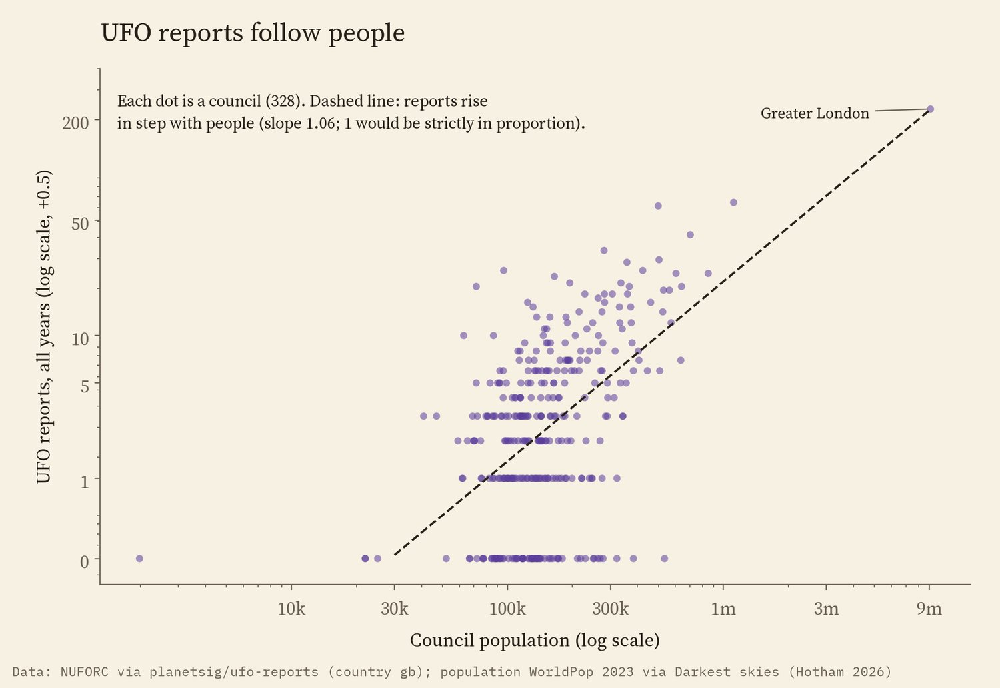
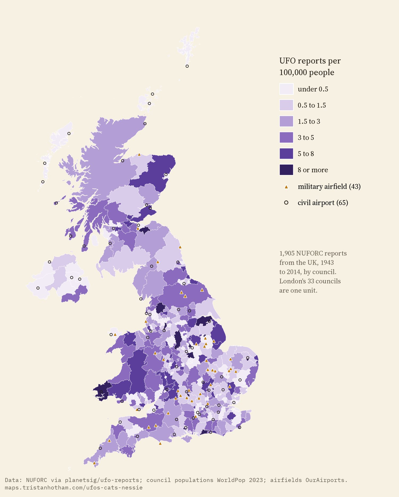
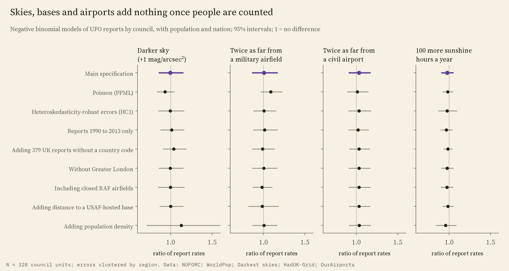
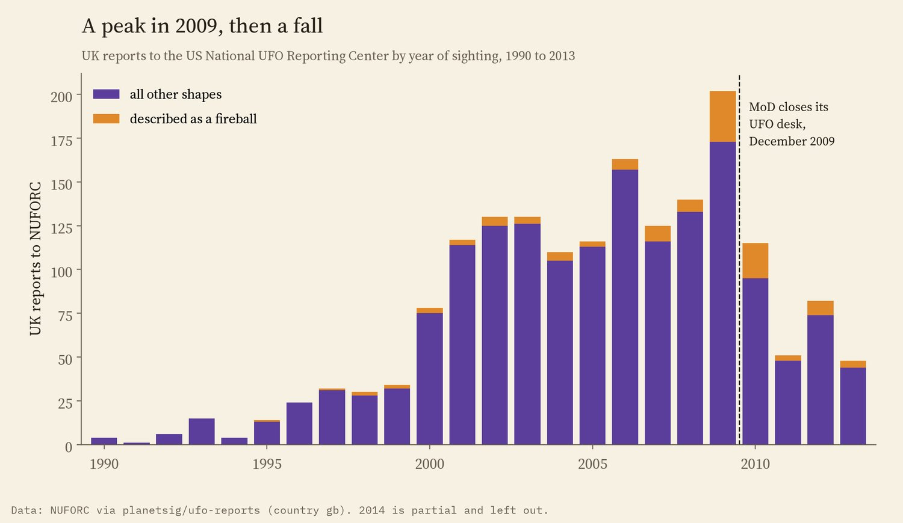
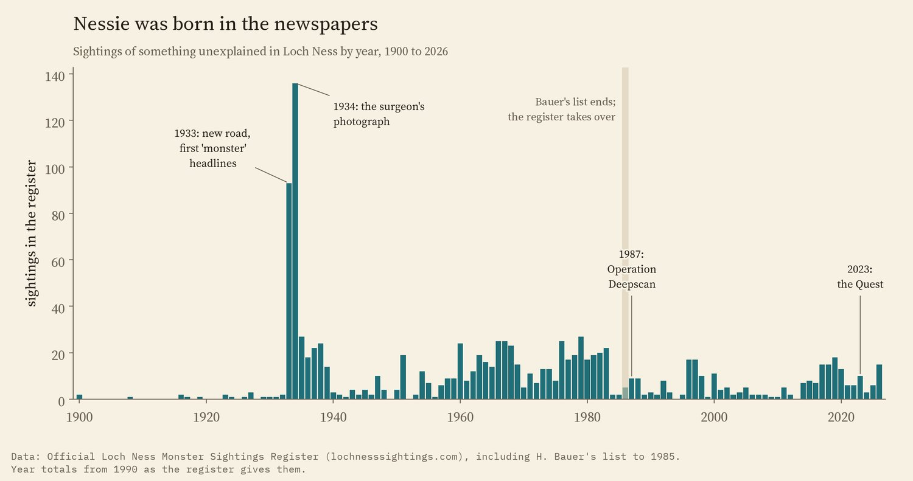
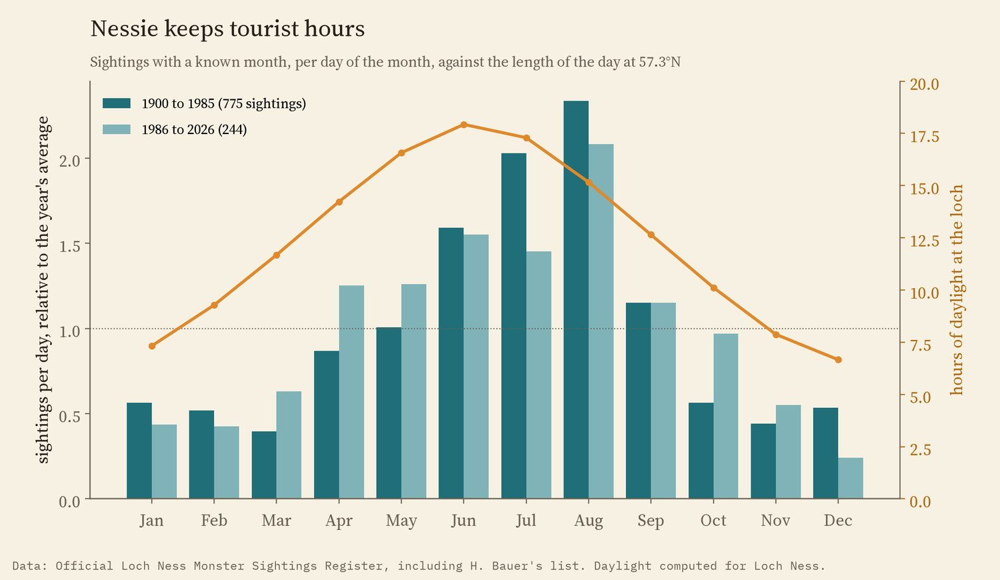
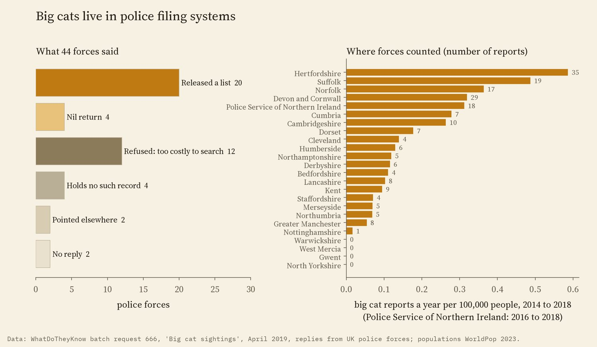

Where people in the UK say they saw something strange, and what explains it. Violet dots: 1,905 UFO reports by town. Shaded areas: what police forces said about big cat reports. Loch Ness: 1,145 sightings in the register, by year. Tap anything.
After the ghosts and the ley lines, the rest of the strange: lights in the sky, big black cats at the edge of a field, and a hump in Loch Ness. People report all three, and the reports have been collected. I wanted to know what explains where, and when, people see them. So I set each set of reports against the ordinary things that might explain it, wrote down the tests before running them, and ran them.
The US National UFO Reporting Center takes reports from anyone, anywhere, and a cleaned, geocoded copy of its records runs to 80,332 reports up to May 2014. 1,905 of them come from the United Kingdom, placed at the town the witness named. I counted them by council (London's 231 reports count as one place, because most are pinned to a single London point) and asked what predicts how many each council has.
Mostly, people. Councils with more people have more reports, and almost exactly in proportion: double the population and reports roughly double (the scaling is 1.08, with a 95% interval of 0.92 to 1.24).

Each dot is a council.
Then the usual suspects. If dark skies let people see more, darker councils should have more reports per head. If air bases or airports put more strange lights in the sky, councils near them should. If clear weather matters, sunnier councils should. None of these shows up. A council with skies one magnitude darker has 0.4% fewer reports per head, an interval from 14% fewer to 15% more. Being twice as far from a military airfield changes the rate by 0.7% (-13% to +16%). Airports and sunshine are just as flat.

UFO reports per 100,000 people by council, with airfields.
A check on the places themselves tells the same story. Half of the reports come from within 36 km of a military airfield; for 20,000 random points spread like the population it is 37 km. And when I put the same number of pretend air bases at random spots on the map, 500 times over, the real airfields did no better than the fake ones: the real result sat in the middle of the fakes.

Each row is a different way of running the model. 1 means no difference.
UK reports to the center climbed through the 2000s and peaked in 2009, with 202 reports, then fell to 48 by 2013. In 29 of the 2009 reports the shape was a fireball, against about 4% before 2005. The National Archives' guide to the Ministry of Defence UFO files says many of the 2008 and 2009 reports to the ministry were Chinese lanterns.
The Ministry of Defence closed its own UFO desk in December 2009. After that, UK reports to the US center fell much faster than American ones: about 62% lower than the trend of the 2000s. That fits people having fewer places to report to, or a fad passing. But I cannot separate the two, and the same model finds drops of its own in 2003 and 2004, when nothing happened to the desk. So I count this as a description, not a finding.

UK reports to NUFORC by year. 2014 is incomplete.
The Official Loch Ness Monster Sightings Register lists every reported sighting it knows of, from Saint Columba in 565 to 2026: 1,180 by its own count. Up to 1985 it reproduces the list in Henry Bauer's book The Enigma of Loch Ness, as scanned pages. I read the scans by machine and the later pages as text, and recovered 1,145 sightings, 97% of the register's count.
Before 1933 there are only a few a decade. In 1933 a new road had just been built along the loch and the Inverness Courier printed a story about a "monster"; that year has 93 sightings, and 1934, the year of the famous "surgeon's photograph" (a hoax, confessed in the 1990s), has 136, the most of any year. Later publicity did nothing like it. Operation Deepscan swept the loch with sonar in 1987 and the Quest, the biggest search in fifty years, ran in 2023; neither year has more sightings than the five years before it.

Sightings in the register by year.
And Nessie keeps tourist hours. Per day, August has 4 times as many sightings as January. Across the year, the number of sightings follows the length of the day closely (a rank correlation of 0.80), and summer, June to August, holds 48% of all sightings with a known month. That is true of Bauer's old list and of the register since 1986. Where a place is named, 46% of recent sightings are at Urquhart Castle or in Urquhart Bay, where the visitors stand.

Sightings per day of each month against hours of daylight at the loch.
In 2019 someone asked every UK police force, through the Freedom of Information site WhatDoTheyKnow, for a list of all its "big cat" sightings since 2014. The answers are a study in themselves. 20 of 44 forces released a list, 4 sent a nil return, 12 refused because searching would cost too much, and 4 said they keep no such record. Surrey said a word search gave more than 2,000 incidents, North Wales 1,160 and South Wales 596; Dyfed-Powys said it would have to read 65,295 calls. Forces explained that word searches also catch Puma trainers, Ford Pumas and leopard print.
The forces that did count found 215 reports in about five years, from none in four forces to 37 in Hertfordshire. Per head, that is between nothing and 0.6 reports a year per 100,000 people, highest in Hertfordshire, Suffolk and Norfolk. I had planned to test whether more rural forces get more reports per head. With all 24 forces that gave a count, there is no clear pattern (a rank correlation with population density of -0.24). Leave out the four forces that found nothing, and denser forces do have fewer reports per head (a rank correlation of -0.57), but with only 20 forces that is a weak pattern at best. So the answer depends on whether "nothing found" means no reports or a search that missed them, and each force searched in its own way, with its own list of words. The clearest pattern is in the filing, not the fields.

Replies to WhatDoTheyKnow batch request 666, 2019.
UFOs. The National UFO Reporting Center's records, as scrubbed and geocoded by the planetsig/ufo-reports project, with country "gb". I used the place and date of each report, never its text. Population and sky darkness by council come from my study Darkest skies, sunshine from the Met Office's HadUK-Grid averages, airfields from OurAirports. The model is a negative binomial count model with the nation as a control, its errors clustered by region, and I ran it 12 other ways.
Nessie. The register's pages, and Bauer's list read from the scanned page images. Where the register gives a total for a year, I used it. No names or descriptions from the register are reproduced here.
Big cats. The replies in the WhatDoTheyKnow batch, with the spreadsheets and letters forces attached. I counted reports by year and kept no descriptions or places.
What this cannot say. These are reports, not events. NUFORC is an American site and a small, self-selected sample of UK reports. Bauer's list was itself compiled from books and newspapers, which is part of the point. Police records depend on how each force searches. None of this says whether anything was there; it says what makes people report it.